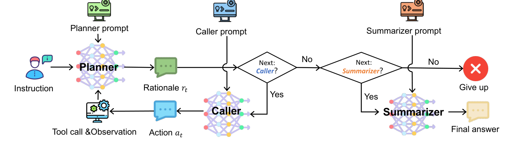

EMNLP 2024pp. 16658–16680
Small LLMs Are Weak Tool Learners: A Multi-LLM Agent
Main claim
Small LLMs use tools better when one shared checkpoint is fine-tuned into a planner, a caller, and a summarizer.
Why does this help?
Planning, choosing a valid tool call, and writing a final answer demand different outputs from the model. α-UMi first trains one shared model on full trajectories, then trains three copies on those roles individually.
After the shared stage, the specialized planner and caller continued reducing their respective training losses while the single model’s losses nearly plateaued. The benchmark comparisons test whether that difference carries over to tool use.

How α-UMi works
One agent runs the task. Three separately trained LLMs handle its decisions, tool calls, and final response.
What does each model see and produce?
The planner sees the instruction and execution history. It writes a rationale and decides whether to call a tool, summarize the answer, or stop.
The caller also sees the planner’s current rationale. It produces the tool name and arguments. The resulting observation is added to the history for the next step.
When the planner routes to the summarizer, the summarizer uses the history and current rationale to write the final response.
Two-stage training
Train a shared checkpoint on complete trajectories, then fine-tune a copy of it for each role.
Why start from one shared checkpoint?
Global fine-tuning learns the full sequence of rationales, actions and answers. During local fine-tuning, the loss for each copy applies to its own output spans. The paper calls this global-to-local progressive fine-tuning (GLPFT).
In the 7B static out-of-domain evaluation, action exact match was 60.47 with the two-stage method that reused instructions, 58.02 when stage two used different instructions, and 53.40 for the one-stage multi-LLM baseline. These comparisons probe initialization and data reuse together with specialization.
Experiment results
The 7B results favor α-UMi on tool calling. The results for final-answer similarity and live win rate are more mixed.
Static evaluation · same-size 7B models
In the out-of-domain ToolBench split, the evaluator feeds both systems a reference trajectory up to the current step. It then compares the next output to that reference.
| Metric | Single-LLM | α-UMi (reuse) |
|---|---|---|
| Planning accuracy ↑ | 84.61 | 89.72 |
| Action exact match ↑ | 56.54 | 60.47 |
| Tool-name hallucination ↓ | 2.26 | 0.45 |
| Argument F1 ↑ | 50.09 | 53.60 |
| Answer ROUGE-L ↑ | 47.99 | 46.26 |
Live APIs · success and win rate
In the live ToolBench test, α-UMi (7B) reached 70.9% average pass rate. GPT-3.5 with DFSDT reached 64.8%, ToolLLaMA with DFSDT 60.7%, and GPT-4 with DFSDT 71.1%. α-UMi’s win rate was 65.9%, compared with GPT-4’s 70.4%.
Pass rate measures task completion. Win rate compares solutions against GPT-3.5-ReACT, and both metrics use a GPT-3.5 evaluator.
What to read critically
The benefits depend on the task, metric, and cost you care about.
What does specialization cost?
Three 7B checkpoints take three times the storage of one 7B checkpoint. In the authors’ setup, training used about 1.3× the compute and 1.5× the time. End-to-end inference time was similar in their measurement.
Static tests reuse the reference history at each step. They isolate local decisions, so use the live evaluation and the case studies when judging how errors interact over a full task.